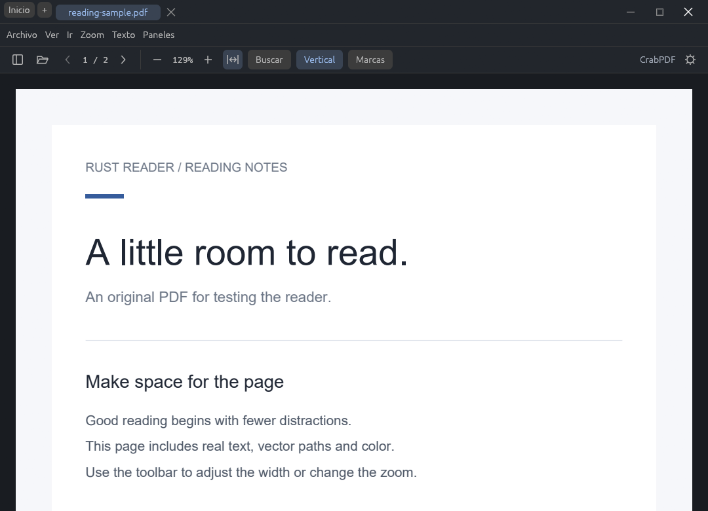
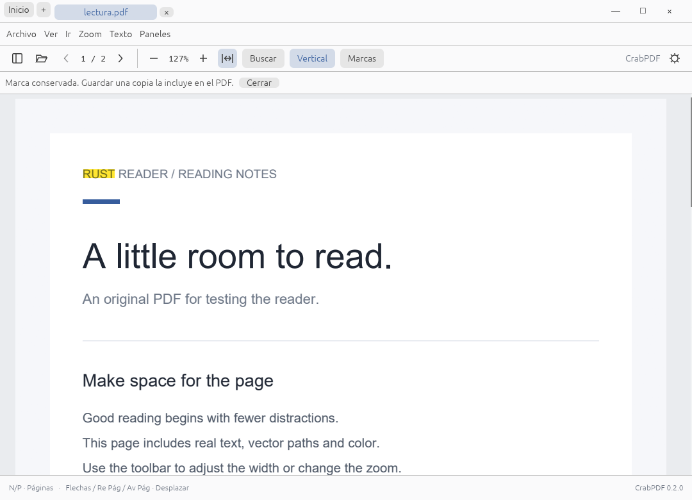
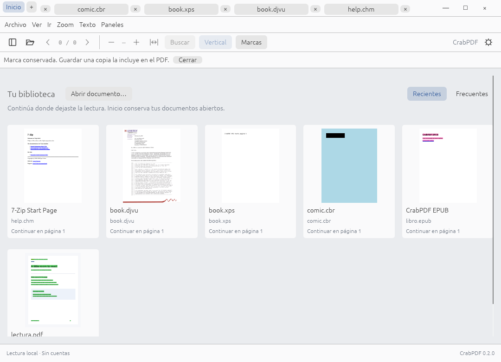

Lee de corrido
Desplázate entre páginas, ajusta el ancho y usa la pantalla completa. Alterna entre una página, páginas enfrentadas y lectura continua.
F11Pantalla completa
Tus PDF, libros y cómics en un lector que deja espacio a la página. Rápido, local y construido en Rust.
Windows x64 / x86 · Ubuntu y Linux x64



Capturas reales de CrabPDF con documentos de prueba.
Del primer vistazo a las notas del margen. Las herramientas de siempre, cerca cuando hacen falta.
Desplázate entre páginas, ajusta el ancho y usa la pantalla completa. Alterna entre una página, páginas enfrentadas y lectura continua.
F11Pantalla completa
Selecciona palabras o frases, resalta y subraya con tus colores. Conserva las marcas localmente o exporta una copia PDF con anotaciones.
Encuentra tus libros por su portada. Guarda favoritos por documento y arrastra una pestaña fuera para abrirla en otra ventana con tu punto de lectura.
Explorar las funcionesUn mismo lugar para el artículo que estudias, la novela que llevas a medias y el cómic del fin de semana.
Todas las extensiones y sus límitesLectura de libros sin protección DRM.
Descarga CrabPDF para tu escritorio. La versión pública actual es {{version}}, una entrega de desarrollo hacia la 1.0.
Consulta los cambios de {{version}}: mejoras de arrastre, alineación e inversión de colores con F6.
Instalador por usuario para Windows 10 y 11. Validado en Windows 10 x64 y x86 bajo WOW64; la prueba física en Windows 11 sigue pendiente.
Descargar para Windows x64{{windows_installer_mb}} MBEl instalador todavía no tiene firma digital. Windows puede mostrar una advertencia al abrirlo.
Paquete DEB para Ubuntu 24.04. TAR para sistemas con glibc 2.36 o posterior.
Descargar para UbuntuDEB, {{ubuntu_deb_mb}} MB Linux x64 · TAR.GZ, {{linux_tar_mb}} MBEn la carpeta de la descarga, instala el DEB con:
sudo apt install ./crabpdf-{{version}}-ubuntu24.04-amd64.deb
Probado con escritorio virtual en Ubuntu 24.04. Para otras distribuciones, consulta los requisitos de Linux.
El código se compila y prueba en CI para Intel y Apple Silicon. Todavía no hay un instalador público ni validación completa de la interfaz en un Mac físico.
Seguir el desarrollo en GitHubCrabPDF nace de una idea: llevar la experiencia de lectura de SumatraPDF a una aplicación en Rust, rápida y adaptable a distintos escritorios.
La meta de la 1.0 es la paridad de funciones. Aún estamos trabajando en ella, con PDFium y herramientas nativas para leer los distintos formatos.
{{version}}
Descarga pública
Rust
Código de la aplicación
1.0
Meta de paridad
No. CrabPDF lee archivos locales, sin cuentas ni telemetría. La conexión se necesita para descargar la aplicación, no para leer tus documentos.
Las marcas se guardan localmente. El archivo original se conserva; cuando quieras compartir las anotaciones, usa Guardar una copia para exportarlas dentro de otro PDF.
En Windows puedes descargar el ZIP portable y descomprimirlo. Conserva el ejecutable, la biblioteca PDFium y la carpeta de herramientas juntos. Las preferencias se guardan en el perfil del usuario.
Todavía no. La paridad completa es el objetivo de la versión 1.0. El repositorio documenta las funciones disponibles, las limitaciones y las pruebas que faltan.